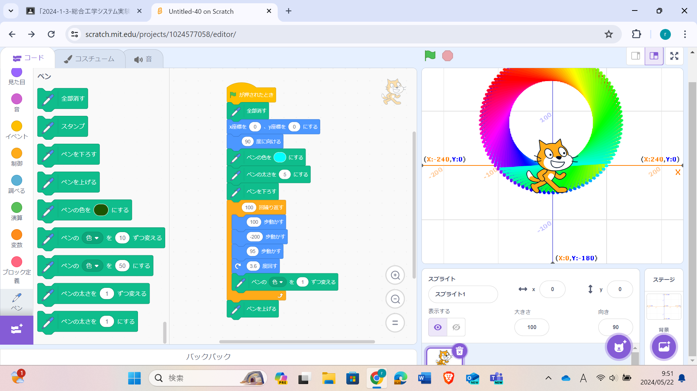
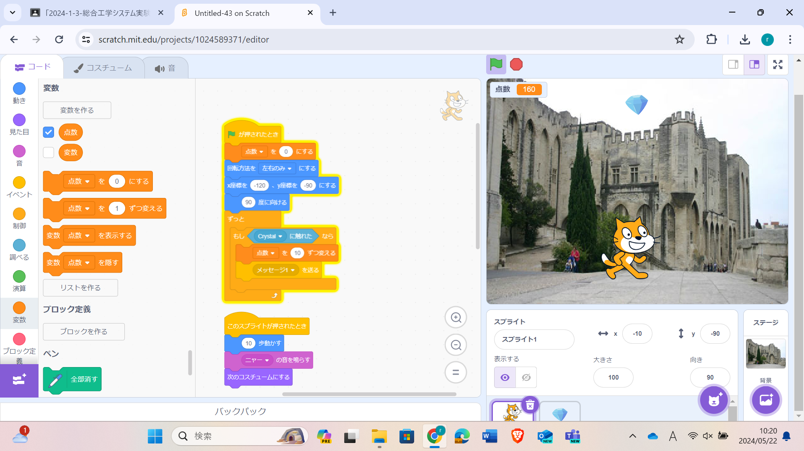

1週目のレポート ： 公大高専１年実習I-1
3a班05番 咲咲
第1週目
1-1 サイエンスアート

1.内容
スクラッチを使って線を書くプログラムを作りました。
拡張機能の「ペン」ブロックを用いて、猫の移動に合わせて線を引くことで幾何学模様を描くプログラムです。
繰り返しの回数を100回にして、1回ごとに3.6度ずつ回すことでちょうど一周するようにしました。
ペンの色を1ずつ変えることでグラデーションが美しく、一周したときに色が元に戻るようにしました。
2.感想
スクラッチ自体は小学生の時に体験していて、「ペン」ブロック自体も使ったことがあったので、内容は簡単だと思いました。
ただ、「歩数が大きすぎると壁にぶつかる」など忘れていることもあったので、アートとして見た目を美しくすることに苦戦しました。
1-2 ゲーム

1.内容
上から落ちてくる物体を猫がキャッチすることでポイントをゲットするゲームを作りました。
矢印キーを用いて猫をコントロールします。回転方法を［左右のみ］にすることで、猫が反転しないようにしました。
乱数を使うことで、アイテムの出現位置や落下速度をランダムにすることで予測できないようにしました。 2.感想
すごくシンプルなゲームでありながらキャラ操作などの基本的な設定が入っていると思いました。
このような、いわゆる「落ちゲー」は縦画面のほうが面白くなると感じました。
また、「雷」スプライトなどの妨害アイテムやレアスプライト、お助けアイテムやコンボなどの特殊効果を追加して
ゲーム性を足したいと思いました。
1-3 ホームページ作成
私のホームページ
1.内容
IchigoJamの開発者である福野泰介さんが作ったプログラムをもとに、githubで自己紹介するホームページを作りました。
2.感想
これだけのシンプルなホームページの裏にも、これだけのプログラムが組まれていると思うと、
僕たちがよく見るホームページをいちから作るには、もっと勉強する必要があると思った。
各ページへのリンク
1週目のレポート
2週目のレポート
3週目のレポート
私のホームページ